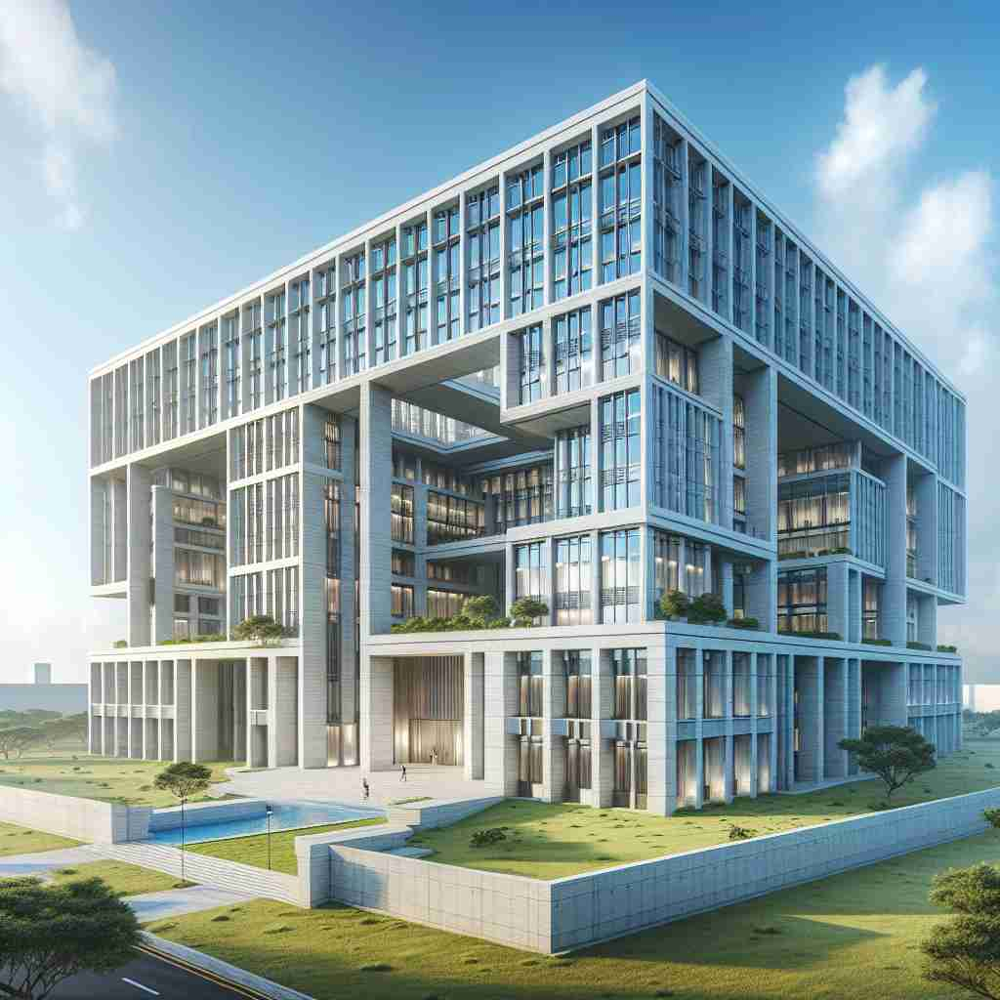

💬 The workers are busy building a house in the neighborhood.

💬 The children want to build a sandcastle near the sea.
💬 The architect is planning a tall building in the city.

💬 The modern building has many large windows and a unique design.
🔈 ['bɪldɪŋ]
🗝️ n. a structure with walls and a roof, such as a house or factory
🖼️ 想象一个繁华的城市中，一个高耸的摩天大楼矗立在街道之间。这座建筑用玻璃和钢铁构建，反射着阳光，彰显出它的现代感。行人经过它的脚下，仰望着这座令人叹为观止的建筑，体验到 'building' 作为具体结构的意义。
🔍 想象一栋建筑物（building）从地基开始逐渐建造的过程。这个过程既可以是具体的建筑工程，也可以比喻为抽象事物的发展。无论是名词还是动词用法，'building'都包含了'构建'、'发展'和'增长'的核心概念。通过联想这个建造过程，你可以更容易理解和记忆'building'的各种含义。
💬 The workers are busy building a house in the neighborhood.
💬 The children want to build a sandcastle near the sea.
💬 The architect is planning a tall building in the city.
💬 The modern building has many large windows and a unique design.
🌳 由词根 "build"（建造）加上名词后缀 "-ing" 组成，形成名词，表示“建筑物”或建造的过程。
💡 可以将 "building" 联想到正在建造的过程或者已经建成的实体，通过“building 是 build 的结果”来帮助记忆。
🗝️ n. the activity or process of constructing something
🖼️ 在一个繁忙的施工现场，工人们戴着安全帽，操作着重型机械，正在建造一座新的商场。钢梁被小心翼翼地吊起并安装到位，声音和灰尘交织在一起，体现了'building'作为建造过程的动态性。
💬 The building of the new bridge will take two years.
❓ 从结果延伸到过程
🗝️ n. the process of becoming stronger or more successful
🖼️ 在一家健身房内，一位年轻人在努力锻炼，他的教练站在一旁鼓励他。每一次举重和拉伸都使他的肌肉逐渐增强，象征着个人发展和提升，这正是'building'在心理和身体上的应用。
💬 We're focusing on building our customer base this year.
❓ 比喻性延伸，如同建造一栋建筑物一样构建某事
🗝️ v. to create or develop something over a period of time
🖼️ 在一个创新的科技公司，一组工程师正在进行头脑风暴会议。他们一步步设计并改进新产品，经过长时间的研究和测试，终于成功推出。这个过程显示了'building'在创造或开发某事物上的意义。
💬 It takes time to build a successful business.
❓ 从名词转化为动词，保留"构建"的核心含义
🗝️ v. to increase in amount or intensity
🖼️ 在一场摇滚音乐会上，音乐渐渐达到高潮。鼓声逐渐加快，吉他声越来越响，观众的热情也随着音乐的递增而高涨，这种情绪的升华正是'building'作为强度增加的体现。
💬 Tension was building as we waited for the exam results.
❓ 比喻性延伸，如同建筑物逐渐增高